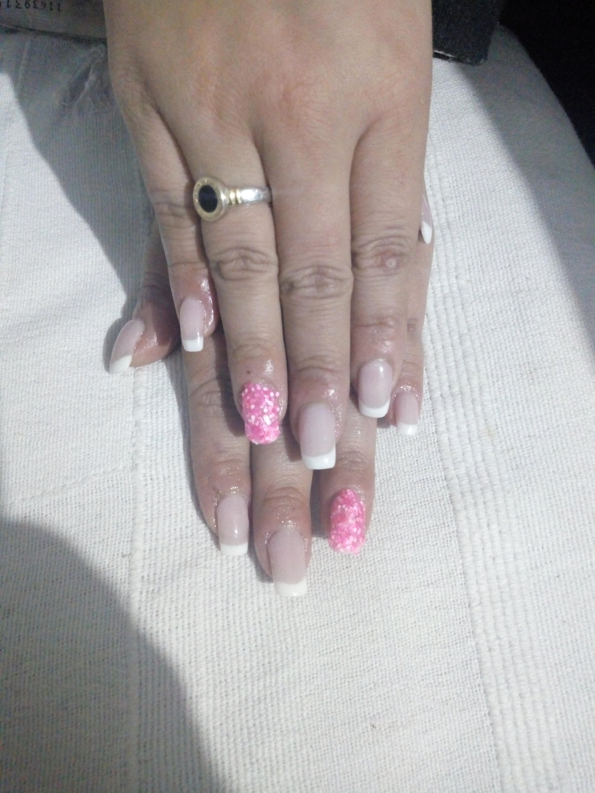

Mayra Origgi
Almamora estetica comienza en el año 2020,desde 2012 empece hacer capacitaciones y muchos cursos para adquirir conoocimientos.En mis primeros pasos practicaba mucho en gente amiga o conocida cobrando solo los materiales , luego de perder el miedo empece a publicar mis trabajos y comenze a trabajar de esto . Estuve 3 años dedidancome a otra cosa hasta que en el 2015 volvi a retomar y proponerme solamente a trabajar y crecer en el mundo de las uñas , asi que comence a trabajar a domicilio y en mi casa , me costo pero logre hacer una cierta cantidad de clientas fijas e ir agregando nuevas , en el año 2020 me decido hacer una estetica en mi casa porque era demasiada la demanda que tenia y no alcanzaba haciendo domicilios , asi que traslade a todas mis clientas hacia mi casa , a fines de 2020 tenia mucho trabajo que empece a pensar si podia agregar alguna empleada o amiga para que trabaje conmigo , en el año 2021 a mediados del mes de octubre tome la iniciativa y fue ahi donde empezo a trabajar conmigo una amiga mia , empezo a tener muchas clientas nuevas y desde alli hasta la actualidad estamos trabajando codo a codo ,nuestros meses mas complicados son mediados de noviembre y todo diciembre , ya que para esas fechas las mujeres quieren estar muy hermosas para pasar visperas de navidad y año nuevo . La idea es seguir creciendo y poder tener aun mas clientas y que todas me sigan elijiendo por mi trabajo .
Antes
Ahora